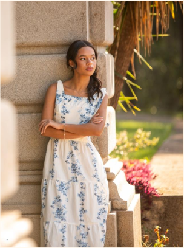
Eu sou a Camilly
Meu interesse pela moda vai além das roupas. Sempre enxerguei a maneira de se vestir como uma forma de expressão, capaz de transmitir personalidade, sentimentos e identidade.
Ao longo do tempo, fui desenvolvendo meu interesse por combinações, referências e diferentes maneiras de construir um estilo próprio.
“Tudo começa com uma paixão, o resto é descoberta.”
Tudo começa com uma inspiração.
Minha relação com a moda também tem uma influência muito especial: minha mãe. Desde pequena, observar suas roupas e experimentar algumas de suas peças e saltos despertou em mim uma curiosidade pelo universo da moda. Foi uma das primeiras formas pelas quais comecei a enxergar as roupas como algo que vai além da necessidade de se vestir.
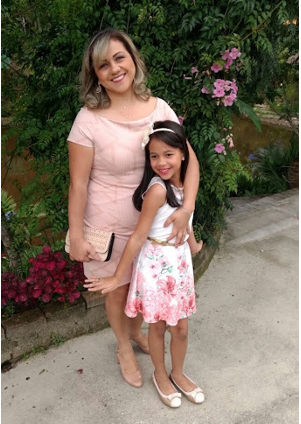
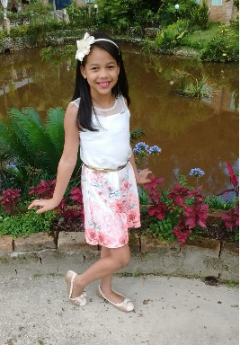
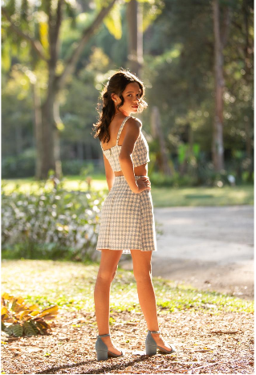
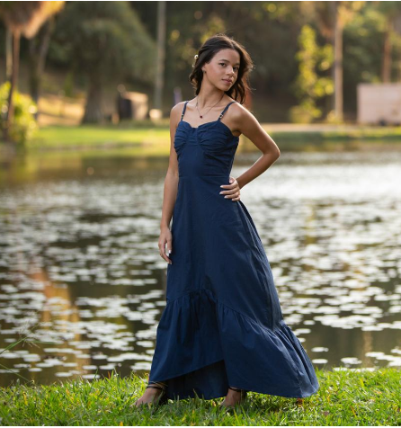
Mais do que roupas, um estilo.
Para mim, a moda vai muito além de acompanhar tendências ou escolher peças bonitas. É sobre descobrir o que combina com quem somos, experimentar diferentes possibilidades e encontrar maneiras de expressar nossa personalidade. Acredito que não existe um único jeito certo de se vestir, porque cada pessoa tem suas próprias referências, preferências e formas de enxergar a moda.
Foi assim que essa ideia ganhou vida.
Este projeto nasceu da vontade de transformar meu interesse pela moda em um espaço que reúna inspirações, descobertas e diferentes formas de expressão. A proposta é incentivar as pessoas a explorarem seu estilo pessoal, conhecerem novas referências e perceberem que a moda pode ser uma ferramenta de autoconhecimento e confiança.
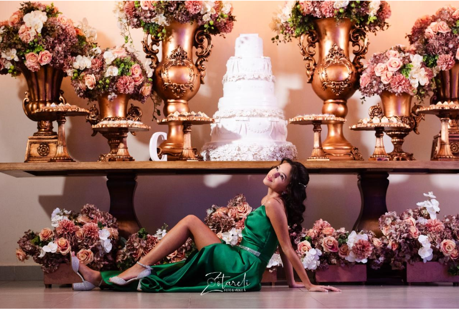
Mais um pouco de mim
Fotos de diferentes fases — looks do dia a dia, passeios, festas e um ensaio — que mostram como a moda sempre esteve presente na minha história.
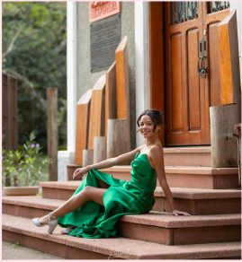
ENSAIO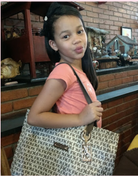
DETALHES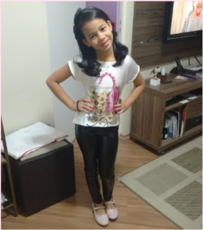
LOOK DO DIA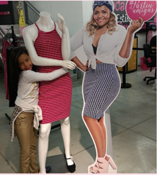
PASSEIO ÀS LOJAS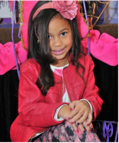
FESTA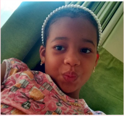
AUTORRETRATO